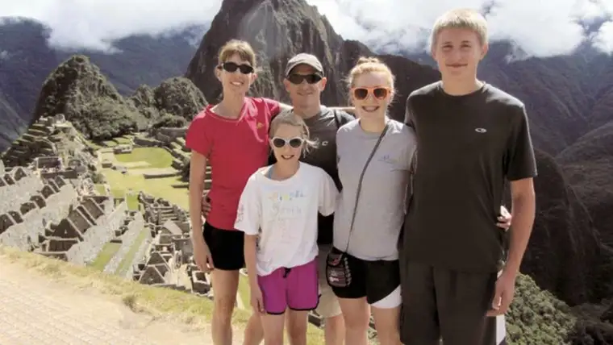

[For the sake of having a repository for my newspaper columns and articles, and allowing a second chance for those who missed them the first time, I reprint them here, with permission. The following ran in The Forum newspaper on Aug.16, 2014.]
{kind=link}
Faith conversations: Readers share God’s presence in the summer
By Roxane B. Salonen

{kind=link}
When Katie Smith and her family decided to travel to Chimbote, Peru, with a group of students and chaperones from Shanley High School this summer, God’s face showed up all over the place, she says.
Smith was particularly impressed that the students chose the hardest option for their project – house-building – and worked hard despite the atmosphere being “dirty and very hot, with bugs constantly flying around.”
By the end of their time there, tears were flowing in abundance.
It was like watching Jesus on both sides, she adds, in the love the Peruvian children had for the students and that which the teenagers displayed in return.
“They were all on the same platform, enjoying each other and loving each other. It was beautiful to witness.”
The miracle of birth
Gary Opp of Fargo says becoming a first-time grandfather to Addison a few weeks ago was ample evidence of God’s loving providence.
“We went through that process of nine months of excitement, all the way to sitting up most of the night at the hospital, anxiously waiting,” he says. It was “4:11 a.m. to be exact,” he adds, when his son-in-law came into the waiting room to announce his granddaughter’s arrival.
He describes holding Addison for the first time as a wave of peace and serenity.
“When I first held her, I whispered into her ears, ‘Jesus loves you,’ ” he says. “I hope that I’ll whisper that into her ears as long as I’m on this earth. It was my way of saying thank you for the blessings
God has brought into our lives.”
The mouths of babes
Spencer Grow of Ramsey, Minn., spent much of his summer in Fargo as a counselor for Camp Good News, an evangelical program for children.
Grow says he felt particularly gratified watching the children resolve conflicts peacefully, apologizing rather than letting anger get the best of them.
“One of the kids was getting upset he wasn’t on the winning team for the game, but another kid said, ‘Here, you can have my canteen money,’ ” Grow says. “He didn’t even think about it. He just handed it right to him.”
Later, when a first-grader asked the provocative question, “If God knows the future, why did he create Satan?” Grow had a chance to explain, in a child’s terms, how the existence of Satan allows for more of God’s glory.
He credits the Holy Spirit for these moments of being able to help children see the ways of faith, which in turn increases his own faith, he says.
Closed door
Teresa Lewis of Horace, N.D., a mindset coach and speaker, felt a surge of frustration when a door closed in her life. But she soon saw the missed opportunity as a chance to reconsider an offer to co-host a morning show on a local, faith-based radio station.
“I feel like one of my missions is to be a positive light for people in a dark world, so my prayer earlier this year was that my territory would be expanded,” she says. “Well, radio reaches thousands. I finally realized, ‘I think this is God’s plan and I just need to follow this.’ ”
During one show, a woman listener called in and shared that because of the on-air conversation, she’d decided to make a major life change. Having been raped as a teen and given birth to the baby, she wanted to become a counselor to help others.
“God was at work; she was listening at the right time,” Lewis says.
A place for peaches
Marc Hanson, Barnesville, Minn., says he saw God’s hand after praying with a group of men about a challenge that had arisen.
The Red River Youth for Christ annual summer peach sale, a vital fundraiser for the local youth organization, had lost its usual parking spot, and thousands of crates of peaches were at risk.
“We were in a total quandary about where we’d park the semi-trailer. We needed an area with high enough exposure,” Hanson says.
Within days, the worry dissolved when a Fargo businessman stepped forward to offer space in his lot. Its high visibility helped bring about record peach sales.
“God is great, and there’s no doubt he was involved in that whole process,” Hanson says. “It became a chance to glorify and honor God and provide for this local youth ministry, which exists to share a life-changing message.”
A white rose
Suzi Senger of Jamestown, N.D., describes herself as a worrier, and when she was ordered to have a CAT scan by her doctor last month to test for cancer, her worry quotient spiked to an all-time high.
“I was very anxious and praying a lot for God to give me peace,” she says.
The test was done on a Friday, and she knew she’d have to wait it out the weekend for the results, which she found nearly intolerable.
On Monday, she was sitting on her deck admiring the yellow moss roses blooming in her yard, when all of a sudden something caught her attention.
“It was a big, white moss rose, which I’d never seen before, and right away my heart leapt,” she says. “It spoke to me as a sign that God was with me.”
The next day, she learned the results, which were, to her great relief, negative.
“God knew all along there was no reason for me to worry,” she says. “That rose was like a sign showing me that my faith was stronger than I’d realized.”